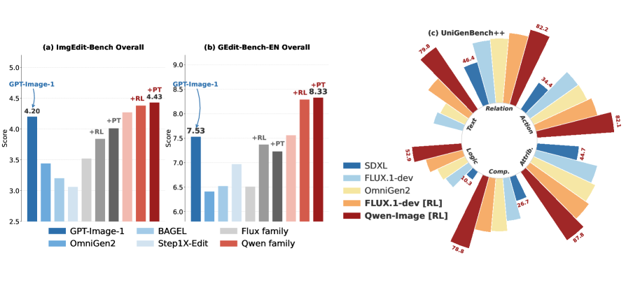
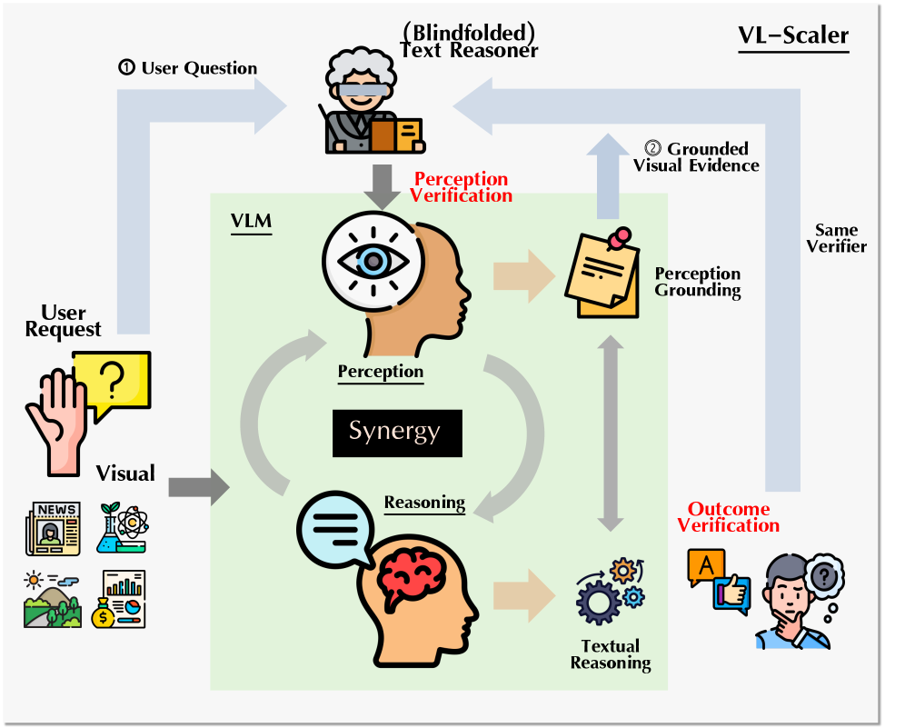
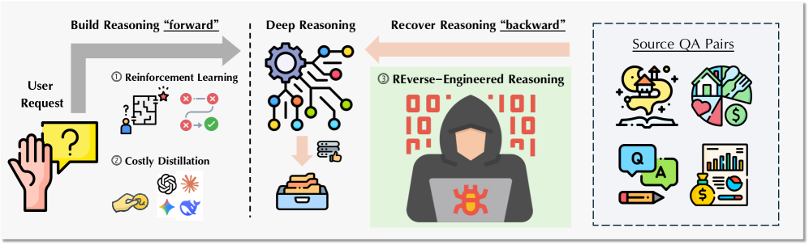
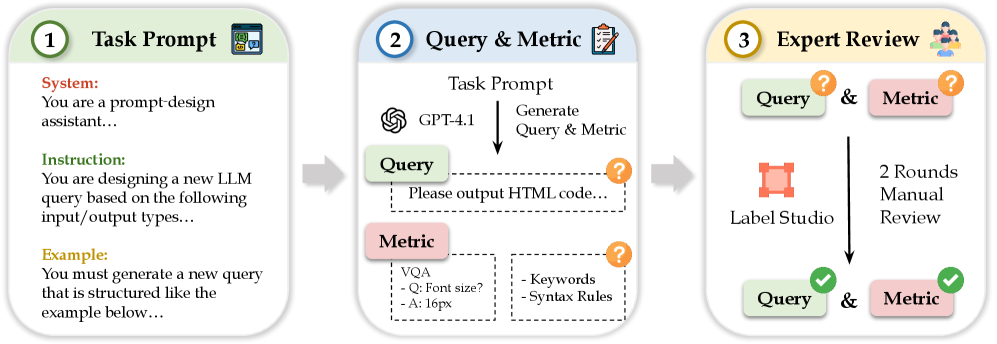
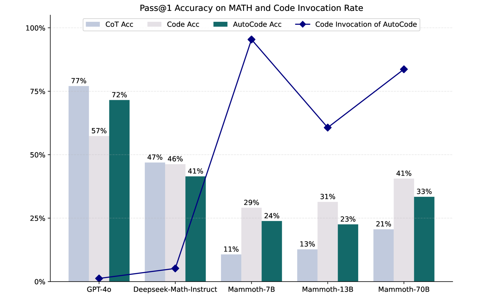
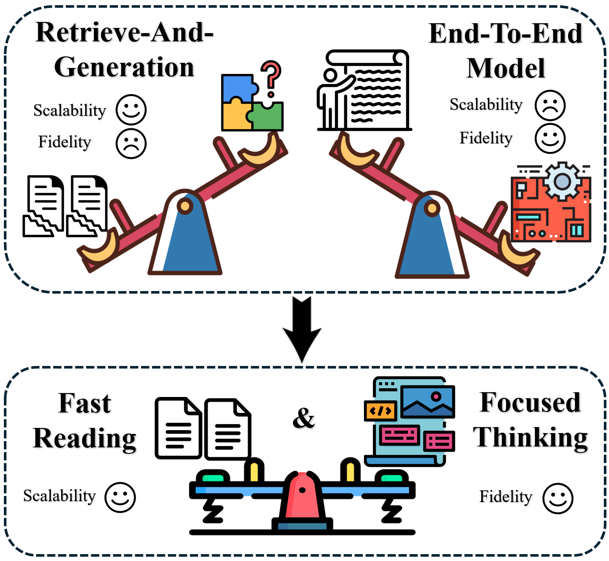

|
Haozhe Wang I am a second-year PhD student at the Hong Kong University of Science and Technology (HKUST) (commenced 2024.09), advised by Prof. Fangzhen Lin, and in close collaboration with Prof. Wenhu Chen at the University of Waterloo. I am supported by the Hong Kong PhD Fellowship Scheme (HKPFS). My previous research focuses on reasoning RL, multimodal understanding, and agentic training. My recent focus shifts toward reward-based training and proactive agentic systems for visual generation and video world models. I expect to graduate in 2027 and am actively looking for positions in industry. I have mentored many students for research, feel free to reach out! Feel free to connect! jasper.whz@outlook.com |
{kind=link}
News
07/2026: RationalRewards accepted to COLM 2026
06/2026: Starve to Perceive accepted to ECCV 2026
05/2026: Bad Seeing or Bad Thinking? accepted to ICML 2026 (Oral Presentation)
02/2026: Emergent Hierarchical Reasoning accepted to ICLR 2026
02/2026: Reverse-Engineered Reasoning accepted to ICLR 2026
09/2025: VL-Rethinker accepted to NeurIPS 2025 (Spotlight)
09/2025: Pixel Reasoner accepted to NeurIPS 2025
05/2025: To Code or Not to Code accepted to ACL 2025
09/2024: Commenced PhD at HKUST with Hong Kong PhD Fellowship Scheme (HKPFS)
|
Research Highlights
Visual Generation (Recent)
|
First-Authored Publications[show selected / show all](*: equal contribution) |

|
Search Beyond What Can Be Taught: Evolving the Knowledge Boundary in Agentic Visual Generation
Haozhe Wang, Weijia Feng, Jinpeng Yu, Che Liu, Ping Nie, Fangzhen Lin, Jiaming Liu, Ruihua Huang, Jimmy Lin, Wenhu Chen, Cong Wei Internship @ Qwen Applications Team arXiv 2026 website / paper / code Image generators fabricate what they don't know. SearchGen looks it up first — and knows when not to — co-training the generator and a search agent to discover the knowledge boundary in agentic visual generation. |
|
 |
RationalRewards: Reasoning Rewards Scale Visual Generation Both Training and Test Time
Haozhe Wang, Cong Wei, Weiming Ren, Jiaming Liu, Fangzhen Lin, Wenhu Chen COLM 2026 website / paper / code Scaling visual generation quality via reasoning-based reward models at both train and test time |

|
Starve to Perceive: Taming Lazy Perception in VLMs with Constrained Visual Bandwidth
Yuhuan Wu, Cong Wei, Fangzhen Lin, Wenhu Chen, Haozhe Wang ECCV 2026 paper Constraining visual bandwidth to force more attentive perception in VLMs |
|
 |
Bad Seeing or Bad Thinking? Rewarding Perception for Multimodal Reasoning
Haozhe Wang, Qixin Xu, Changpeng Wang, Taofeng Xue, Chong Peng, Wenhu Chen Internship @ Meituan LongCat Team ICML 2026 (Oral Presentation) paper Disentangling perception from reasoning in VLMs via targeted reward signals |

|
Emergent Hierarchical Reasoning in LLMs through Reinforcement Learning
Haozhe Wang, Qixin Xu, Che Liu, Junhong Wu, Fangzhen Lin, Wenhu Chen ICLR 2026 website / paper / code RL induces emergent hierarchical decomposition of complex reasoning tasks |
|
 |
Reverse-Engineered Reasoning for Open-Ended Generation
Haozhe Wang, Haoran Que, Qixin Xu, Minghao Liu, Wangchunshu Zhou, Jiazhan Feng Internship @ ByteDance-Seed & M-A-P ICLR 2026 website / paper Reverse-engineering reasoning chains for creative and open-ended generation |

|
Pixel Reasoner: Incentivizing Pixel-Space Reasoning with Curiosity-Driven Reinforcement Learning
Haozhe Wang, Alex Su, Weiming Ren, Fangzhen Lin, Wenhu Chen NeurIPS 2025 website / paper / code Curiosity-driven RL for pixel-level visual reasoning in multimodal models |

|
VL-Rethinker: Incentivizing Self-Reflection of Vision-Language Models with Reinforcement Learning
Haozhe Wang, Chao Qu, Zuming Huang, Wei Chu, Fangzhen Lin, Wenhu Chen NeurIPS 2025 (Spotlight) website / paper / code Teaching VLMs to self-reflect and correct reasoning via RL-based incentives |
|
 |
StructEval: Benchmarking LLMs' Capabilities to Generate Structural Outputs
Jialin Yang, Dongfu Jiang, Lipeng He, Sherman Siu, Yuxuan Zhang, ..., Haozhe Wang, ..., Wenhu Chen TMLR 2026 website / paper / code Comprehensive benchmark for evaluating structured output generation in LLMs |
|
 |
To Code or Not to Code? Adaptive Tool Integration for Math Language Models via Expectation-Maximization
Haozhe Wang, Long Li, Chao Qu, Fengming Zhu, Weidi Xu, Wei Chu ACL 2025 paper Adaptive tool integration for math reasoning via expectation-maximization |

|
ACECODER: Acing Coder RL via Automated Test-Case Synthesis
Huaye Zeng, Dongfu Jiang, Haozhe Wang, Ping Nie, Xiaotong Chen, Wenhu Chen ACL 2025 paper / code Automated test-case synthesis for reinforcement learning of code generation |
|
 |
CogDoc: Towards Unified Thinking in Documents
Qixin Xu, Haozhe Wang, Che Liu, Fangzhen Lin, Wenhu Chen arXiv 2025 paper Unified reasoning framework for complex document understanding |
Awards
|
Service
|